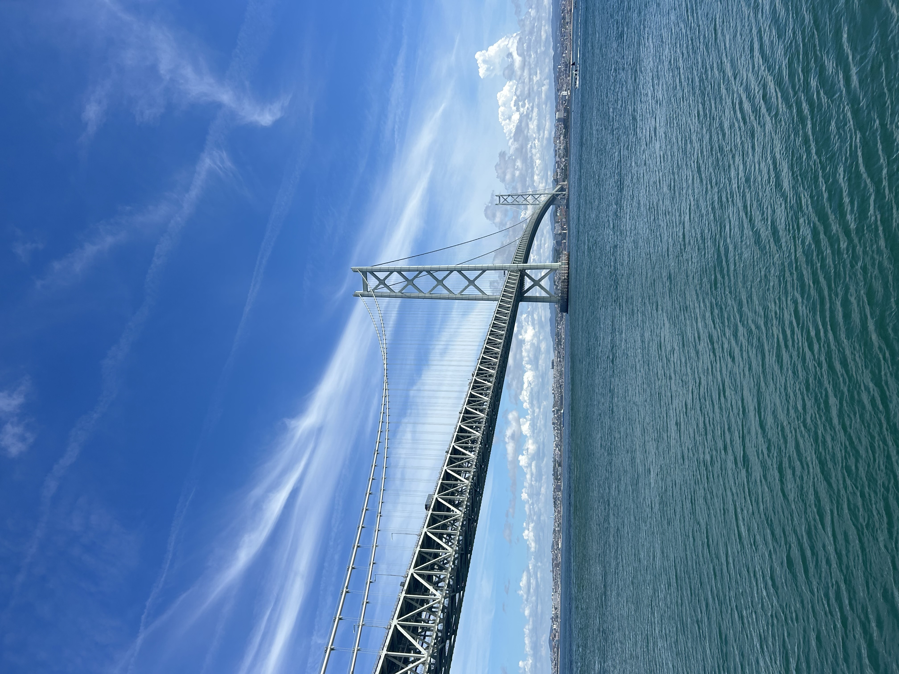

自己紹介
こんにちは。私の名前は河田琉生です！
長岡京市出身で、様々な事に興味があります！
一時期鳥取県米子市にも住んでいたことがあり、様々な場所での経験を積んできました。
基本情報
- 出身地: 長岡京市
- 専攻: スーパーITエンジニア専攻
出身地の紹介
🏠 長岡京市（出身地）

京都府長岡京市で生まれ育ちました。歴史と自然が豊かな素晴らしい街です！
- 特徴: 京都と大阪の間にある便利な立地
- 有名なもの: 竹林の道、長岡天満宮、筍（たけのこ）
- 好きな場所: 長岡天満宮の梅園、西山公園
- 思い出: 子供の頃よく家族と天満宮にお参りに行きました
🌊 米子市（一時期住んでいた場所）

一時期、鳥取県米子市に住んでいました。自然豊かで食べ物が美味しい素敵な街です！
- 特徴: 大山の麓にある自然豊かな街
- 有名なもの: 大山、境港（ゲゲゲの鬼太郎）、美味しい海の幸
- 好きだった場所: 大山の景色、境港の海
- 思い出: 新鮮な海鮮料理と大山の雄大な景色が印象的でした
- 学んだこと: 地方の魅力と人の温かさを実感
趣味
ゲームやアニメ映画鑑賞、音楽を聞いたりするのが好きです。特に以下の活動に熱中しています。
🧳 旅行

国内外問わず旅行が大好きです！
- 今まで訪れた場所: 北は北海道から南は沖縄まで今まで様々な場所に行ってきました
- 好きな旅行スタイル: 自然を感じられる場所での観光
- 次に行きたい場所: ヨーロッパ（スイス、イタリア）
🏂 スノーボード
冬のスポーツとしてスノーボードを楽しんでいます！
- スノーボード歴: 約5年
- よく行くゲレンデ: 白馬、志賀高原
- 好きなコース: 中級～上級の斜面
- 目標: パウダースノーでの滑走をマスターすること
- スノーボード仲間: 友人たちと毎年2-3回はゲレンデへ
🚗 ドライブ

車を運転するのが大好きで、自分で運転して色々な場所に行くのが趣味です！
- 運転歴: 約1年
- 好きなドライブコース: 海沿いの道、山道、高速道路
- よく行く場所: 琵琶湖、奈良公園、嵐山、神戸
- ドライブの楽しみ: 景色を見ながらの運転、道の駅での休憩
- 目標: 日本全国をドライブで回ってみたい
- お気に入り: 音楽をかけながらの一人ドライブ
🎣 釣り
自然の中で静かに過ごす釣りが好きです。特に海釣りに魅力を感じています！
- 釣り歴: 約5年
- 好きな釣り: 海釣り（特に好き）、川釣り、バス釣り
- よく行く場所: 境港（鳥取）、舞鶴湾、大阪湾、琵琶湖
- 海釣りで狙う魚: アジ、キス、サワラ、ヒラメ、メバル、ブリ、スズキ
- 淡水での魚: ブラックバス、マス
- 海釣りの楽しみ: 潮風を感じながらの釣り、新鮮な魚との出会い
- 思い出: 米子にいた時に境港で初めて海釣りをして魅力に目覚めました
- 目標: もっと大きな海の魚を釣り上げたい
将来の目標
プログラミングスキルを活かして、旅行やスノーボードに関するWebサービスを作ってみたいと考えています。